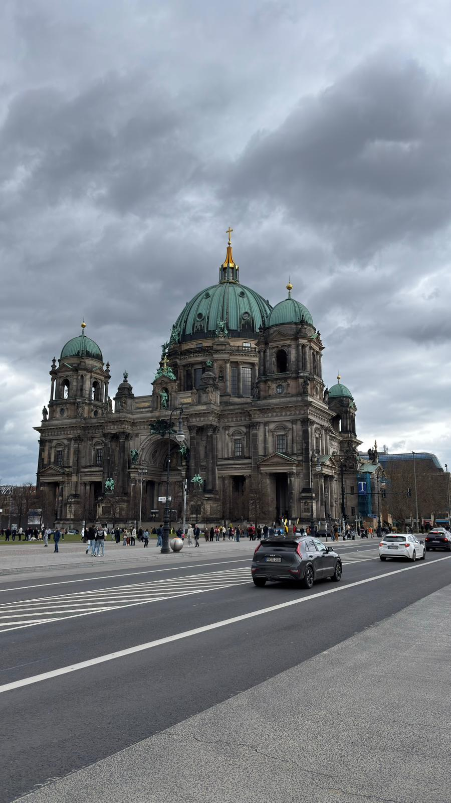
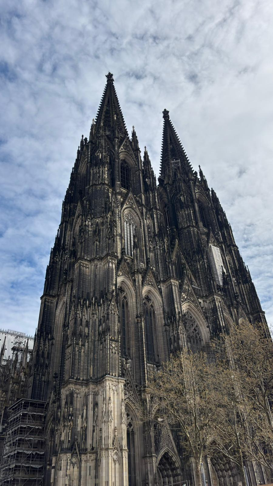
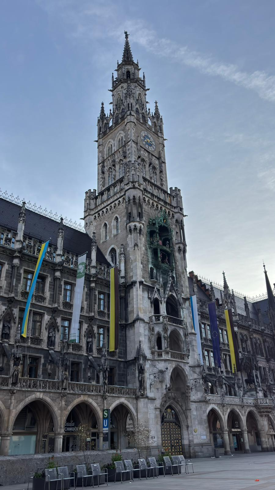

Germany
Germany was the only country where I had the chance to visit four different cities during my Erasmus journey. I explored Dresden, Cologne, Berlin, and Munich, and each city had its own character. Dresden was probably my favorite among them. It was beautiful and peaceful, and like Prague, it had a slight medieval atmosphere that made walking around the city very enjoyable. Cologne was a small and pleasant city. While the Cologne Cathedral was truly impressive, I found the rest of the city fairly ordinary. Berlin was the city that disappointed me the most. Since it is the capital of Germany, I expected something more impressive. The city felt very modern, which is probably related to the reconstruction that took place after World War II. Even though it has an important history, it did not leave as strong an impression on me as I expected. Munich was a calm and attractive city. It did not stand out as much as some of the other places I visited, but it was still enjoyable to explore and left a positive impression overall.
Photo Gallery



Cities Visited
- Dresden
- Cologne
- Berlin
- Munich
Favorite Place
Cologne Cathedral
My Rating
5/10 ⭐